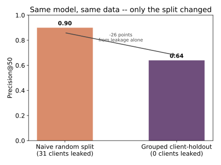
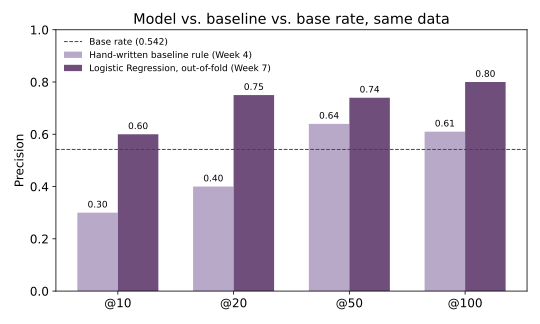
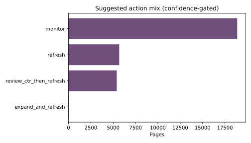

FlyRank's own March 2026 portfolio study names "refresh mature pages before they decay" as its #1 playbook priority, backed by a stark pattern in 341,701 real content pieces: health score peaks at 61–90 days, falls to its lowest point by 271–365 days, and recovers only when a page is actually refreshed. That's a direction, not a queue — it doesn't say which pages, this week, out of far more candidates than a team has time to touch. This study turns FlyRank's own stated priority into exactly that: a validated, per-page ranking. Using the FlyRank ML Internship starter dataset (30,000 pseudonymized content pages across 32 clients) plus a companion data-contract exercise against the full 79-million-row FlyRank warehouse, a hand-written baseline is compared against a Logistic Regression model validated with a client-grouped holdout. The validated model reaches 0.740 precision on its top 50 recommendations (0.800 at 100) — well above both the 0.640 baseline and the 0.542 base rate — but a naive, non-grouped split alone would have measured that same model at 0.90, a 26-point inflation from split design, not model quality. The output is a ranked, reason-coded action queue intended strictly as a reviewer aid, with explicit no-go rules and monitoring triggers.
Introduction
This paper's case study is FlyRank's own: their March 2026 portfolio report measured content health falling from 33.1 at its 61–90-day peak to 14 by 271–365 days, and found that pages refreshed within 30 days of the 365+ day mark saw a 3.2x health boost and 57x more impressions than similarly old, untouched pages. Their playbook's own first recommendation is to act on this — "refresh mature pages before they decay" — and it's presented as a portfolio-wide pattern, not a per-page tool. A content team reading that finding still faces the same operational question: out of thousands of candidate pages, and a review capacity of roughly 50 per cycle, which pages, this week? Working through a backlog alphabetically or by gut feel wastes review time on pages that were never going to move, while pages that genuinely need attention lose visibility silently until someone happens to notice. This study builds and validates the missing piece: a per-page, reason-coded ranking that operationalizes FlyRank's own headline recommendation into something a reviewer can act on this cycle.
That "why" matters as much as the ranking. A score with no reason attached isn't trustworthy to a reviewer and can't be checked against their own judgment of the page. Every recommendation in this study carries a plain-language reason code, a confidence tier, and an explicit statement of what would make that specific recommendation wrong.
Data
Two datasets were used, at different stages of this project, for different purposes.
The starter dataset (used for the model in this paper)
content_refresh_anonymized.csv: 30,000 rows × 44 columns, one row per
pseudonymized content page, spanning 32 pseudonymized clients, with trailing-90-day search
(Google Search Console) and analytics (GA4) metrics. Identifiers (content_id,
client_id) are pseudonyms used only for grouping and splitting — never as
model features.
The FlyRank warehouse (data-contract exercise, not the model's training data)
To confirm this approach is ready to scale, a separate exercise queried the full
FlyRank/internship-warehouse release on Hugging Face (~79 million daily
performance rows) directly via DuckDB against a mid-panel month
(month=2026-03, 9,841,378 rows, 55 clients, 331,437 content items). That exercise
is not the source of the model reported here, but it surfaced two concrete data-safety findings
worth stating plainly, since they'd matter immediately on scale-up:
- A snapshot trap. The warehouse's content dimension table records only the current state as of its July 2026 export — 88.1% of March rows showed a "last updated" date after that row's own report date. Computing "days since update" naively against this table would leak the future into a feature.
-
A three-valued availability flag. GA4 data availability is
TRUEfor only 4.2% of March rows,FALSEfor 65.1%, andNULLfor the remaining 30.7% — a plain= FALSEfilter would silently mishandle nearly a third of the table.
Columns deliberately excluded from modeling, and why: trend_direction and
trend_pct (the label's own source — using them as features would be
tautological); provider_used / model_used (not observed search or
engagement behavior); content_id / client_id (identifiers, grouping
only). No client names, URLs, or private queries appear anywhere in this study.
Methodology
Task framing
This is a classification model — predicting an observed, binary label — deployed as a ranking tool: pages are sorted by predicted probability, and a reviewer works the list top-down. That's why the evaluation metric throughout is precision@K (of the top K ranked pages, how many are actually right?) rather than accuracy or AUC alone — precision@K is the number that matches the actual constraint of a fixed review capacity.
Label / proxy
The true target — "does this page need a content review" — is never directly
observed. The proxy used is is_declining_label: 1 when a page's impressions fell
more than 20% from the previous 30-day window to the last 30-day window, 0 otherwise (54.2% of
pages, an observed quantity, not a rule invented after the fact). This proxy has a known gap: a
page can lose impressions for reasons a reviewer wouldn't act on (seasonality, a paused
campaign), and a page can be worth reviewing without yet showing a measurable decline.
Baseline
A transparent, hand-written rule, built the same way FlyRank's own session materials describe: a score combining a CTR gap at an achievable search position (positions 1–20), page visibility, and staleness — each weighted by hand, no fitted parameters. Two signals were checked against real data before the rule was written: staleness alone came back MIXED (not a clean, monotonic relationship with decline), while CTR-vs-position came back CONFIRMED (a clean, monotonic relationship within every position band) — so the rule leans primarily on the confirmed signal.
Model
Logistic Regression and Random Forest were both trained and compared on the same
client-grouped holdout; Logistic Regression won at every K on that split, which is the opposite
of what a naively-run comparison on this same data would suggest at first glance — a
disagreement reported directly rather than resolved by picking the cleaner-sounding story. The
deployed queue in this paper is scored by Logistic Regression via 5-fold
GroupKFold cross-validation (grouped by client_id), giving every one
of the 30,000 rows an out-of-fold prediction from a model that never saw that row's client
during training.
Validation design and the leakage audit
Every split in this study is grouped by client_id: a client's pages either all sit
in training or all sit in the held-out set, never split across both. The reason this matters is
not theoretical — it was measured directly:

A generalized leakage smell-test was also run across every numeric feature: the strongest
single-feature correlation with the label was 0.220 (has_position), far below a
0.9 flag threshold that would suggest a feature was quietly restating the label — the
kind of circularity found, and openly disclosed, in FlyRank's own March 2026 research paper,
where the top health-score predictors turned out to be three of the score's own four formula
ingredients.
Results
| Method | @10 | @20 | @50 | @100 |
|---|---|---|---|---|
| Base rate (random) | 0.542 | 0.542 | 0.542 | 0.542 |
| Hand-written baseline rule | 0.30 | 0.40 | 0.640 | 0.61 |
| Logistic Regression (out-of-fold) | 0.60 | 0.75 | 0.740 | 0.80 |

Read precision@50 and @100 as the trustworthy numbers. Precision@10 and @20 are measurably noisier — with only 8–10 items in the numerator, a single item flipping moves the score by up to 10 points. This was confirmed directly when comparing Logistic Regression against Random Forest: the models' ranking at K=10 looked more dramatic than their ranking at K=100, on the exact same split.
Where the model is wrong
High-confidence false positives (predicted declining, actually stable) share one pattern: a near-zero click-through rate at an otherwise reasonable position, on pages whose low CTR is plausibly explained by query intent (navigational or branded queries) rather than a fixable content problem — the model inherited the baseline rule's exact blind spot. High-confidence false negatives are pages with almost no data at all (1–2 impressions in 90 days) — cases where there simply isn't enough signal for any method to do better.
Limitations
- The label is a proxy, not ground truth. "Declining" means a measured impressions drop — not a confirmed content problem, and not a guarantee that a refresh would help.
- Client concentration in the ranked queue. Found first in the hand-written baseline and confirmed again in the validated model: the top of the queue draws disproportionately from the one or two largest clients by page count, because they simply supply more high-scoring candidates — not because smaller clients' problems are less real. A fair rollout across FlyRank's client book would need a per-client cap or per-client reporting.
- A single point-in-time snapshot. 30,000 rows, one export — not a live feed, and not yet the 79-million-row warehouse.
- Observational, not causal. Every relationship reported here is a measured correlation on this data. Nothing in this study establishes that refreshing a page causes a recovery, and nothing here predicts a search engine's future behavior.
- One grouped split, not a repeated cross-validation. The single-split comparison (Logistic Regression vs. Random Forest) used one client-holdout draw; a repeated grouped cross-validation would be needed before fully trusting which model generalizes better, particularly given how few clients (8) sat in that held-out fold.
Ranked recommendations
Each page's reason code maps to a suggested action — but only when the model's own
confidence clears "low"; a page can match a strong pattern and still be routed to
monitor if the model itself isn't confident.

| Reason code | Suggested action |
|---|---|
| CTR gap at an achievable position | Review CTR (title/meta), then refresh |
| Stale, but visible | Refresh |
| Thin, but visible | Expand and refresh |
| Visible, no specific flag / low confidence | Monitor |
Intended use
A reviewer aid for a fixed weekly review capacity — the reviewer takes the ranked shortlist and applies their own judgment to each row before acting. 48.7% of actionable (non-monitor) rows sit at "medium" rather than "high" confidence and require mandatory review before any action, not a spot-check.
What should never be automated
- Auto-publishing, auto-deleting, or auto-redirecting content based on this queue alone.
- Using this score as an employee, agency, or vendor performance metric — it scores pages, not people.
- Treating "declining" as a causal diagnosis of why a page is struggling.
- Running this queue against live data without revalidating — it was trained and validated on a single mid-2026 export.
Monitoring / retrain triggers
- Base rate drifting meaningfully away from 0.542.
- The top features by model coefficient changing rank or sign on a retrain.
- A new warehouse export becoming available.
- Precision@50 on a realized, human-checked outcome sample dropping meaningfully below 0.74.
Reproducibility
Every number in this paper traces back to an executed notebook in the linked repository. Fixed
random seed: 42 throughout. To rerun: clone the repo, pip install -r
requirements.txt, and execute the notebooks below in order (jupyter nbconvert
--to notebook --execute, or open in Colab via the badge on each notebook).
| Notebook | What it establishes |
|---|---|
| w02_ml_task_framing.ipynb | Task type, target/proxy, success metric |
| w03_data_contract.ipynb | Warehouse data contract, verified queries, deliberate leak trap |
| w04_baseline_score.ipynb | Hand-written baseline, signal checks, top-10 review |
| w05_model.ipynb | Model vs. baseline, grouped split, error analysis |
| w06_validation_audit.ipynb | Paper methodology audit, honest-split before/after, leakage audit |
| w07_action_playbook.ipynb | Final ranked queue, reason codes, monitoring plan |
| capstone.ipynb | This paper, mirrored as an executable notebook |
Acknowledgments & data credit
Built on the FlyRank ML Internship dataset, provided by FlyRank. Section 4's validation-design critique engages respectfully with FlyRank's own State of AI-Driven SEO, March 2026 research report, whose transparency about its own methodology — including openly disclosing where its Health Score feature importance is partly circular — set the standard this paper tried to meet.